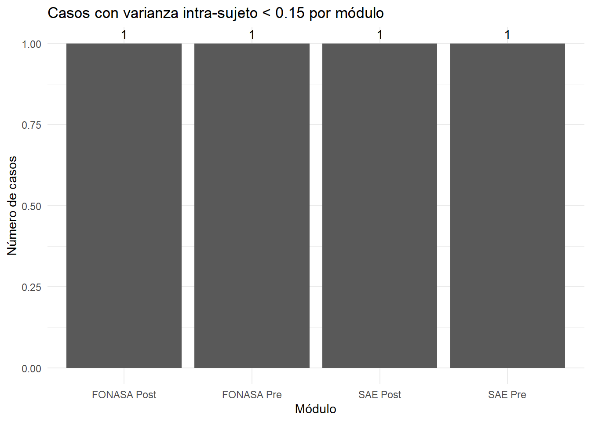
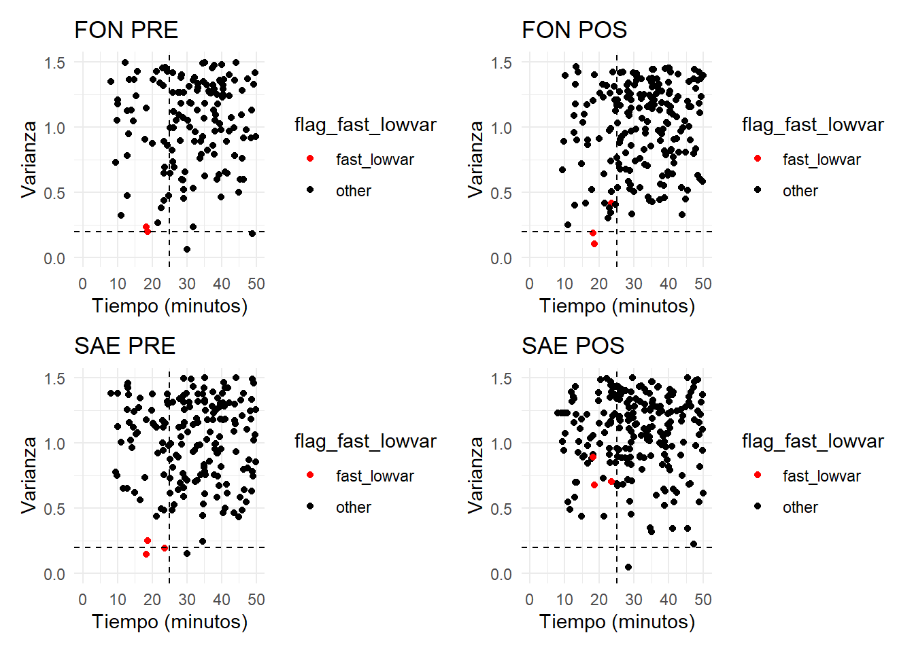

| Duración de la encuesta — Resumen | ||||||
|---|---|---|---|---|---|---|
| Promedio, mediana, rango y % de casos < 20 minutos | ||||||
| Grupo | N | Media | Mediana | Mínimo | Máximo | % <20 min |
| Overall | 436 | 43 min, 54 seg | 37 min, 35 seg | 8 min, 03 seg | 546 min, 40 seg | 11.9% |
| Género: f | 238 | 48 min, 54 seg | 40 min, 46 seg | 9 min, 14 seg | 546 min, 40 seg | 8.4% |
| Género: m | 198 | 37 min, 52 seg | 34 min, 04 seg | 8 min, 03 seg | 315 min, 52 seg | 16.2% |
| Zona: Región | 107 | 46 min, 13 seg | 35 min, 47 seg | 8 min, 23 seg | 546 min, 40 seg | 9.3% |
| Zona: RM | 329 | 43 min, 08 seg | 38 min, 07 seg | 8 min, 03 seg | 315 min, 52 seg | 12.8% |
| Educación: Media incompleta | 8 | 71 min, 35 seg | 35 min, 14 seg | 18 min, 32 seg | 315 min, 52 seg | 12.5% |
| Educación: Media completa | 127 | 42 min, 22 seg | 37 min, 56 seg | 8 min, 03 seg | 162 min, 14 seg | 10.2% |
| Educación: Técnico superior | 135 | 47 min, 33 seg | 39 min, 06 seg | 9 min, 14 seg | 546 min, 40 seg | 8.1% |
| Educación: Universitaria | 164 | 40 min, 56 seg | 35 min, 55 seg | 8 min, 23 seg | 155 min, 09 seg | 15.9% |
| Educación: NA | 2 | 26 min, 51 seg | 26 min, 51 seg | 10 min, 55 seg | 42 min, 47 seg | 50.0% |
| Edad: 18–30 | 103 | 42 min, 41 seg | 34 min, 46 seg | 8 min, 23 seg | 315 min, 52 seg | 13.6% |
| Edad: 31–45 | 245 | 42 min, 34 seg | 36 min, 23 seg | 8 min, 56 seg | 233 min, 32 seg | 11.4% |
| Edad: 46–65 | 88 | 49 min, 00 seg | 40 min, 57 seg | 8 min, 03 seg | 546 min, 40 seg | 11.4% |
Reporte de campo Estudio Experimental SAE-Fonasa
Distribución del tiempo de respuesta
En promedio los participantes demoran 47 minutos, aunque hay un 7.8% de casos que demoran menos de 20 minutos. Se concentran en los participantes de media incompleta y género masculino (Ojo, es justo el perfil donde la muestra anda baja, por si estuvieran rellenando participantes artificiales).
Tramos y tiempos de respuesta
No existe asociación entre la cantidad de elementos que se suman al experimento y el tiempo de demora de las respuestas.
| get_variable_fc | mean_time |
|---|---|
| 1 | 2702.281 |
| 2 | 2411.138 |
| 3 | 3159.235 |
| 4 | 2517.373 |
| 5 | 2286.868 |
| 6 | 2449.538 |
| 7 | 2498.870 |
| 8 | 3064.962 |
| get_variable_saec | mean_time |
|---|---|
| 1 | 2526.288 |
| 2 | 2426.683 |
| 3 | 2496.442 |
| 4 | 2537.115 |
| 5 | 2729.796 |
| 6 | 3087.852 |
| 7 | 2945.811 |
| 8 | 2338.135 |
| variable | correlacion |
|---|---|
| suma_carga vs tiempo | 0.0240564 |
| suma_tramo vs tiempo | -0.0070125 |
Attention Check examination
Un 14% del total no pasa el primer checkeo de atención y un 23% del total no pasa el segundo. En el cuestionario SAE y FONASA los no atentos son pocos.
| Resultados de Attention Checks | ||
|---|---|---|
| Proporciones y frecuencias por prueba | ||
| Variable | No pasó la prueba | Pasó la prueba |
| Común – Atención check 1 | 0.140 (60) | 0.860 (376) |
| Común – Atención check 2 | 0.230 (102) | 0.770 (334) |
| SAE – Atención check 1 | 0.020 (7) | 0.980 (429) |
| SAE – Atención check 2 | 0.060 (28) | 0.940 (408) |
| FONASA – Atención check 1 | 0.030 (14) | 0.970 (422) |
| FONASA – Atención check 2 | 0.040 (17) | 0.960 (419) |
¿Cuánto fallan los que fallan? Un 25% falla al menos un attention check, y un 9% falla dos o más. 65% de la muestra nunca falla.
| Resultados de Attention Checks — Número de fallos | |||||||
|---|---|---|---|---|---|---|---|
| Proporciones y frecuencias de participantes que fallaron 0–6 checks | |||||||
| Grupo | Falló 0 checks | Falló 1 check | Falló 2 checks | Falló 3 checks | Falló 4 check | Falló 5 checks | Falló 6 checks |
| Overall | 0.628 (274) | 0.266 (116) | 0.071 (31) | 0.025 (11) | 0.007 (3) | 0.002 (1) | 0.000 (0) |
| Género: f | 0.630 (150) | 0.277 (66) | 0.071 (17) | 0.017 (4) | 0.000 (0) | 0.004 (1) | 0.000 (0) |
| Género: m | 0.626 (124) | 0.253 (50) | 0.071 (14) | 0.035 (7) | 0.015 (3) | 0.000 (0) | 0.000 (0) |
| Zona: Región | 0.673 (72) | 0.243 (26) | 0.065 (7) | 0.019 (2) | 0.000 (0) | 0.000 (0) | 0.000 (0) |
| Zona: RM | 0.614 (202) | 0.274 (90) | 0.073 (24) | 0.027 (9) | 0.009 (3) | 0.003 (1) | 0.000 (0) |
| Educación: Media incompleta | 0.625 (5) | 0.375 (3) | 0.000 (0) | 0.000 (0) | 0.000 (0) | 0.000 (0) | 0.000 (0) |
| Educación: Media completa | 0.567 (72) | 0.307 (39) | 0.094 (12) | 0.024 (3) | 0.008 (1) | 0.000 (0) | 0.000 (0) |
| Educación: Técnico superior | 0.644 (87) | 0.267 (36) | 0.052 (7) | 0.022 (3) | 0.007 (1) | 0.007 (1) | 0.000 (0) |
| Educación: Universitaria | 0.659 (108) | 0.232 (38) | 0.073 (12) | 0.030 (5) | 0.006 (1) | 0.000 (0) | 0.000 (0) |
| Educación: NA | 1.000 (2) | 0.000 (0) | 0.000 (0) | 0.000 (0) | 0.000 (0) | 0.000 (0) | 0.000 (0) |
| Edad: 18–30 | 0.612 (63) | 0.311 (32) | 0.049 (5) | 0.029 (3) | 0.000 (0) | 0.000 (0) | 0.000 (0) |
| Edad: 31–45 | 0.624 (153) | 0.257 (63) | 0.082 (20) | 0.024 (6) | 0.008 (2) | 0.004 (1) | 0.000 (0) |
| Edad: 46–65 | 0.659 (58) | 0.239 (21) | 0.068 (6) | 0.023 (2) | 0.011 (1) | 0.000 (0) | 0.000 (0) |
Varianza intra-sujeto por módulo
La literatura señala que < 0.15 de varianza en una batería es una respuesta sospechosa. Se presentan muy pocos casos con esa baja magnitud. No hay casos con 0 varianza (todas las respuestas iguales).
| Descriptivos de Varianza Intra-Sujeto por Módulo | |||||
|---|---|---|---|---|---|
| Módulo | Mínimo | Máximo | Media | Mediana | Desv.Std |
| var_fon_pos | 0.103 | 4.183 | 1.467 | 1.324 | 0.726 |
| var_fon_pre | 0.062 | 4.514 | 1.789 | 1.606 | 0.862 |
| var_sae_pos | 0.051 | 3.861 | 1.371 | 1.321 | 0.507 |
| var_sae_pre | 0.148 | 3.417 | 1.451 | 1.445 | 0.571 |

Alternancias mecánicas (Autocorrelación)
Hay buenos números de autocorrelación de las respuestas (lag-1). Ninguna supera los 0.90. Los números entre grupos no son muy contrastantes.
| Autocorrelación de Patrones de Respuesta (lag-1) | |||||||
|---|---|---|---|---|---|---|---|
| Descriptivos generales y por variables demográficas | |||||||
| Categoría | N | Mínimo | Máximo | Media | Mediana | SD | |
| Overall | Muestra total | 436 | 0.289 | 0.861 | 0.603 | 0.613 | 0.102 |
| genero | f | 238 | 0.289 | 0.861 | 0.588 | 0.595 | 0.099 |
| m | 198 | 0.294 | 0.861 | 0.621 | 0.634 | 0.102 | |
| comuna_rm | RM | 329 | 0.289 | 0.861 | 0.607 | 0.614 | 0.102 |
| Región | 107 | 0.309 | 0.805 | 0.593 | 0.612 | 0.101 | |
| education_recoded | Media completa | 127 | 0.309 | 0.861 | 0.617 | 0.619 | 0.103 |
| Media incompleta | 8 | 0.363 | 0.734 | 0.562 | 0.591 | 0.136 | |
| Técnico superior | 135 | 0.289 | 0.820 | 0.590 | 0.593 | 0.107 | |
| Universitaria | 164 | 0.294 | 0.811 | 0.604 | 0.616 | 0.094 | |
| NA | 2 | 0.630 | 0.635 | 0.633 | 0.633 | 0.003 | |
| edad_tramo | 18–30 | 103 | 0.294 | 0.811 | 0.604 | 0.602 | 0.098 |
| 31–45 | 245 | 0.309 | 0.861 | 0.598 | 0.613 | 0.103 | |
| 46–65 | 88 | 0.289 | 0.861 | 0.618 | 0.616 | 0.103 | |
Respuestas rápidas con poca varianza
No hay casos que estén dentro del percentil 10 de tiempo de demora y tengan auto-varianza menor a 0.15 en los módulos de sae y fonasa. El único caso que hay presenta varianza en los otros módulos.
# A tibble: 0 × 363
# ℹ 363 variables: participant_id <dbl>,
# datetime_of_participant_creation <chr>, datetime_of_entering_survey <chr>,
# datetime_of_finishing_survey <chr>, time_in_seconds <dbl>,
# ip_address <chr>, location_city <chr>, location_region <chr>,
# location_postcode <dbl>, location_country <chr>, location_latitude <dbl>,
# location_longitude <dbl>, device_type <chr>,
# is_touch_enabled_on_device <dbl>, browser_string <chr>, locale <chr>, …
Respuestas inconsistentes pre y post
Arbol de decisiones
Considerando el árbol de decisiones propuestos, este sería el resultado de las filtraciones de datos.
| categoria | frecuencia | proporcion |
|---|---|---|
| strike_double_atencion | 46 | 0.1055046 |
| strike_one_atencion_saefonasa | 27 | 0.0619266 |
| strike_time | 76 | 0.1743119 |
| strike_variance | 0 | 0.0000000 |
| eliminados | 67 | 0.1536697 |